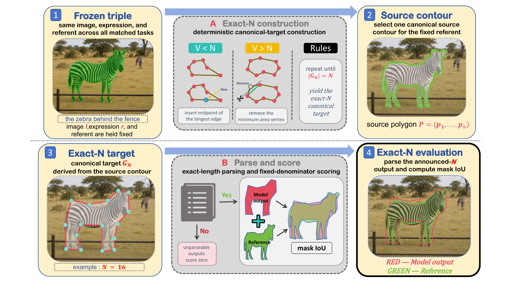
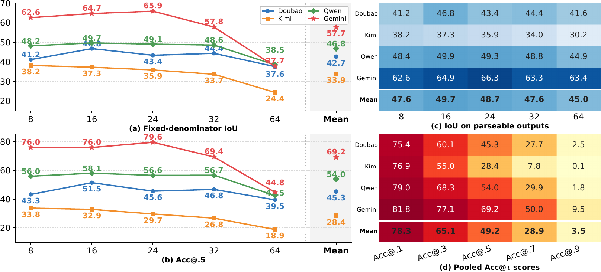
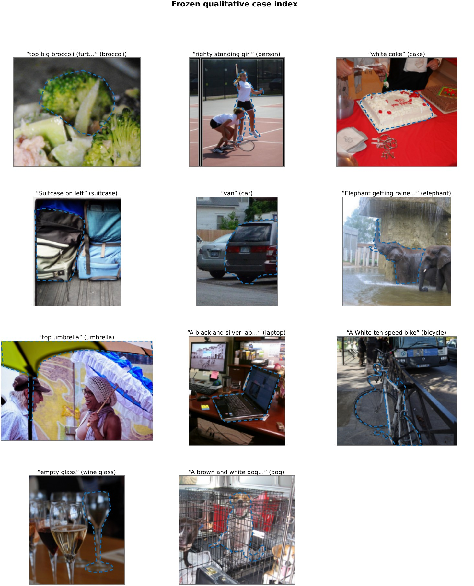
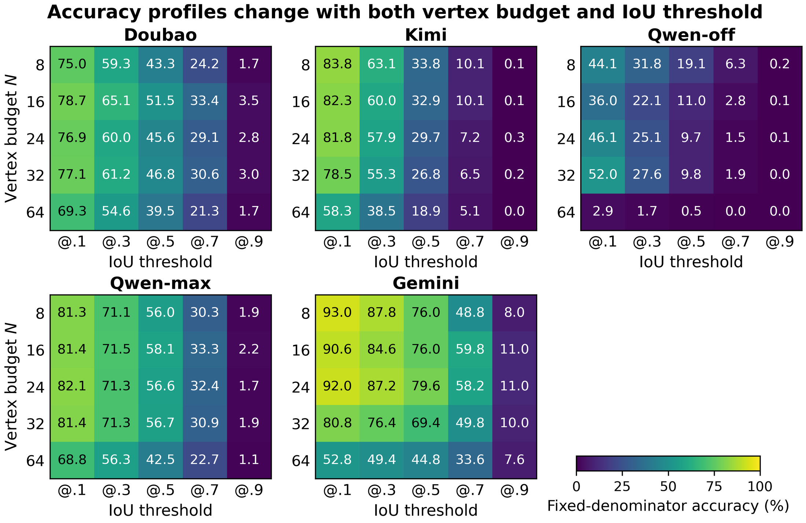

TRIPLES1,500RefCOCO / RefCOCO+ / RefCOCOg 各 500
VERTEX BUDGETS05N = 8, 16, 24, 32, 64
HOSTED MODELS04Doubao · Kimi · Qwen · Gemini
OUTPUT CONTRACTExact-N每个顶点为 0–999 的坐标整数序列
01 / MOTIVATION
框指标接近饱和，并不意味着模型会构造边界
指代表达定位通常使用边界框：模型只要覆盖目标的大致位置就可能得到很高分。但不同轮廓可以共享同一个外接矩形，框指标无法检验模型能否把视觉和语言证据转换成可使用的区域。分割掩码更细，但通常需要专门的解码器；多边形提供了一个可以直接由聊天模型文本接口表达、又能进行区域评分的中间层。
论文的关键控制是 exact-N：图像、表达式和目标物体保持不变，只改变要求输出的顶点数量。顶点增加可能提高轮廓表达能力，也可能带来重复点、自交、序列过长和输出不完整。

Figure 1 / GroundBench pipeline。 同一个 image–expression–referent triple 生成五个 exact-N 目标，模型输出经过解析、栅格化和 IoU / 合法性评分。
02 / BENCHMARK DESIGN
把“找到目标”和“描述区域”拆成可测量的不同阶段
01Frozen triple同一图像、表达式和 referent 在五个预算中保持不变。
02Canonical target从源轮廓确定性插点或简化，得到 exact-N 目标。
03Text output模型输出恰好 2N 个坐标值，解析失败计零。
04Multi-axis score分别报告 filled IoU、parse coverage 与 legal polygon。
| 指标 | 测量对象 | 为什么不能省略 |
|---|
| Fixed IoU | 所有计划问题，解析失败计零的填充区域重叠 | 反映交付给下游的整体有效性。 |
| Parseable IoU | 仅在输出满足 exact-N 时计算区域重叠 | 区分“会画区域”和“能完成输出契约”。 |
| Legal coverage | 坐标范围、非退化、无自交等多边形合法性 | 区分几何质量与格式/拓扑失败。 |
| Target preference | 与同类 distractor 相比是否更偏向目标 | 把目标选择和轮廓构造分开观察。 |
03 / MAIN RESULTS
顶点更多，不一定得到更好的几何输出

结果图。 固定分母 IoU、parseable-only IoU 与预算 N 的关系；N=64 的长输出契约放大了缺失和非法输出的影响。
| 论文观察 | 报告值 | 应该如何理解 |
|---|
| 框 vs 直接多边形 | 框 IoU 约 88.2；直接多边形 pooled IoU 57.7 | 二者参考区域不同，不能直接当成同一指标的性能差。 |
| 同一轮廓参考 | 预测框转多边形约 57.3；直接多边形约 57.7 | 控制参考目标后，直接多边形的优势接近消失。 |
| 高预算失败 | Gemini N=64 fixed IoU 37.7，parseable-only 63.4 | 长序列的完成率损失会显著压低固定分母得分。 |
| 合法性 | Gemini N=64 legal coverage 约 7.5% | 格式、重复点、自交和拓扑约束成为独立瓶颈。 |

定性案例。 不同模型在同一 referent 上的多边形输出质量与完成情况。
补充分析。 预算和配置变化下的区域准确率。
04 / CONTROLLED INTERVENTIONS
错误不止来自视觉理解，也来自输出接口
Thinking setting
Qwen 的 thinking 开关在相同图像与表达式下影响完成率和区域质量；这说明性能差异不能只归结为“有没有找到目标”，也包含模型如何组织长坐标序列。
False cues
错误空间线索比错误颜色线索更具破坏性。它们是输入控制实验，不足以定位某个内部机制，但能提示评测需要分离语义选择、空间关系和边界生成。
重要诊断：Kimi 在 N=8 时对目标的 preference 约 85.5%，但条件区域 IoU 约 44.6%；Qwen-max preference 约 85.2%，条件 IoU 约 57.5%。选中目标和描述好目标区域是两个不同问题。
05 / SCOPE AND CONTRIBUTION
GroundBench 测的是可交付的几何输出，不是潜在边界感知的全部
贡献
- 把同一批 referent 重新映射到多分辨率 exact-N 多边形；
- 把区域重叠、序列完成和多边形合法性分开报告；
- 让通用 hosted VLM 在不增加专用 segmentation head 的情况下接受几何输出审计；
- 用 matched interventions 检查推理设置和空间线索。
边界
- 结果只覆盖抽样的 COCO referents 和特定日期的 hosted configurations；
- 多边形文本输出不等同于 latent boundary perception；
- 参考轮廓的离散化、栅格化和多部件选择会影响数值；
- 专家模型校准和 hosted API 不能当作完全公平的训练对比。